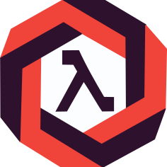
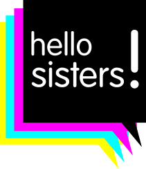

Lambda Violet
 Lambda Violet's mission is to provide a platform to women who work developing software (or are just enthusiasts) where they can publish technical and/or informative articles related to functional programming, testing and everything related to backend development in general; in order to make visible and promote this type of specialization, where apparently, the number of women is currently low. This project is temporarily stopped pending of a new initiative that will pop out in my head :)
Hello Sisters!
 Currently, the participation of women and non-binary people in local and national technical events is very low, and not at all representative of the diversity of existing professionals in the software industry. However, there is also a tendency for strictly technical and responsible jobs not to be filled by diverse professionals; causing a visibility issue. Given that “you can’t be what you don’t see,” in Hello Sisters! we defend the visibility of future professionals in the technical sector. I collaborated actively as a organiser and mentor in between 2017 and 2018.
Logic Tree Resolver
I worked on this project as a result of adapting my university degree to the new degree in Computer Engineering. Web Application that implements Ken Watanabe's book "Problem Solving 101" strategies in order to solve problems cooperatively and analytically, allowing diagrams to be modified concurrently, cooperating through feedback from other members of the organization, and keeping information on problems resolved available to the entire organization.